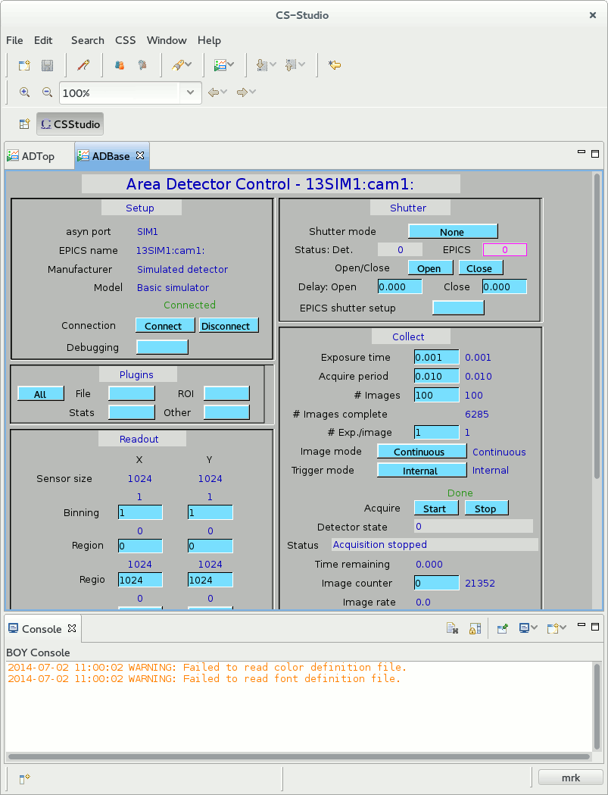
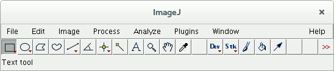
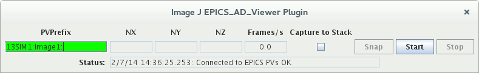

This is the July 03, 2014 revision of the EPICS EasyPVA document.
The areaDetector software that was stated by Mark Rivers and is now being developed by Mark and others is widely used by the EPICS Beam Line Community.
David Hickin from Diamond has implemented areaDetector plugins that allow image data to be transfered over the network via pvAccess. The data appears as normative type NTNDArray data. One plugin converts NDArray data to NTNDArray, which resides in a pvDatabase record. Another plugin gets the NTNDArray, via pvAccess, and acts like it is the detector, i. e. it converts the NTNDArray to NDArray data stored in an asynDiver port.
pvaAsyn is an attempt to show that EPICS V4 can be used to provide other support for the areaDetector. In fact it can provide support for any software that is based on asynDriver. This is why this project is names pvaAsyn instead of some name asscociated with areaDetector.
asynDriver is a software layer that is mostly independent of epics iocCore records and device support. It is based on the concept of a port and port drivers. A port is identified by a name. A portDriver implements semantics for the port. It implements one or more standard interfaces and can have a set of parameter names associated with each interface. Thus a port is seen by client code as something that has a port name and a set of variables each of which is accessed via a parameter name and one of the standard interfaces.
devEpics, a component of asynDriver, provides a set of standared device support modules that connect an iocCore record to a port and a parameter. The record type is determined by the interface type. For example if the interface is asynFloat64 then the record type will be ai or ao. An areaDetector application normally has many ports and each port has many parameters. For example in the simDetector application, the SIM1 port has 94 parameters. The normal way to access these parameters is via iocCore records. Thus for SIM1 approximately 94 records are required. Since an areaDetector instance ususlly has many ports many records are required. The simDetector (Simulted Detector) application that comes with areaDetector has 2523 records.
The data for a parameter must only be accessed with the port locked. With the standard epics records and device support each parameter access results in locking the port, accessing the data, and unlocking the port. This also means that it is not possible to access multiple parameters as a synchronous set of data.
What EPICS V4 can contribute is the ability to access a set of parameters connected to a port as synchronous set of data With pvaAsyn multiple parameters can be accessed via a single V4 record. Also when changing parameter values pvaAsyn changes all the values with the port locked. Thus all parameter changes are synchronous.
pvaAsyn is currently only a proof of concept. It allows simultaneously changing a set of parameters. It should also monitor for changes.
The example below uses CSS to control the epics records connected to an areaDetector application. The example uses ImageJ to display the images. areaDetector provides an ImageJ plugin that connects ImageJ to the set of records required for image display. The example uses pvget and pvput to access the pvaAsyn records that connect to areaDetector ports.
The following CSS plugin would be nice to have.
pvaAsyn implements pvDatabase records that connect to asynDriver ports. Each record instance connects to a single port. A record is configured by specfyinng a port name and a list of parameter names. Each parameter name must be a parameter that the port supports. For now pvaAsyn is only useful for setting parameter values. In the future monitoring should also be implemented.
pvaAsyn requires that the following have all been built: pvCommonCPP, pvDataCPP, pvAccessCPP, pvDatabaseCPP, pvaSrv, and areaDetector. After they have been built then, in configure, copy ExampleRELEASE.local to RELEASE.local. Edit it so that it has the correct path names. Then at the top level type:
make
After it has been build:
cd iocBoot/iocSimDetector ../../bin/linux-x86_64/adioc st.cmd.linux
If not on linux see that areaDetector documentation for how to start the ioc.
What is running is the simDetector ioc that comes with areaDetector, but in addition there are three pvDatabase records:
string[] name [ENABLE_CALLBACKS,NDARRAY_PORT]
string[] value [1,SIM1]
string[] type [integer,string]
string[] name [ENABLE_CALLBACKS,DIM0_ENABLE,DIM1_ENABLE,DIM0_MIN,DIM1_MIN,DIM0_SIZE,DIM1_SIZE]
string[] value [0,1,1,0,0,1000000,1000000]
string[] type [integer,integer,integer,integer,integer,integer,integer]
string[] name [MIN_X,MIN_Y,SIZE_X,SIZE_Y,ACQUIRE,ARRAY_CALLBACKS]
string[] value [0,0,512,512,0,1]
string[] type [integer,integer,integer,integer,integer,integer]
For each record only the value field can be changed by a pvAccess client. When the client makes a change all values are made with the asyn port locked. Thus all changes are synchronous.
The areaDetector documentation describes several ways for clients to
control and monitor areaDetector applications.
This section describes the following way: This assumes that you have installed css.
Start it and then open the file at /home/git/areaDetector/ADCore/ADApp/op/opi/autoconvert/ADTop.opi.
Then select simulator 1.
The following appears:



In another window execute the command:
pvget -r "field()" sim1PortThe following is returned:
sim1Port
structure
string[] name [MIN_X,MIN_Y,SIZE_X,SIZE_Y,ACQUIRE,ARRAY_CALLBACKS]
string[] value [0,0,1024,1024,1,1]
string[] type [integer,integer,integer,integer,integer,integer]
You can change the values by giving commands like:
pvput sim1Port 6 0 0 1024 1024 1 1and
pvput sim1Port 6 0 0 256 256 1Note that the image changes the size for both x and y at the same time.